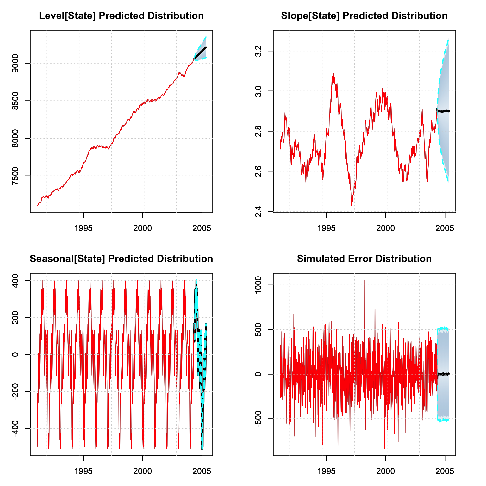
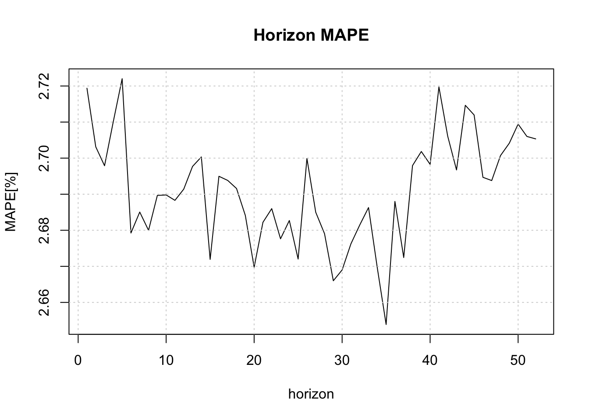

Chapter 4 tsets package
4.1 Introduction
Exponential smoothing was proposed by Robert G. Brown, originally in Brown (1959) and later in Brown (1962), where he developed the general exponential smoothing methodology in the context of inventory management, production planning and control. Independently, Charles C. Holt developed a similar method for exponential smoothing of additive trends and an entirely different method for smoothing seasonal data in Holt (1957). This approach gained popularity following Winters (1960), which tested Holt’s methods with empirical data, from whence the now popular Holt-Winters forecasting system came to prominence. More recently, R. J. Hyndman et al. (2002) and Taylor (2003) formalized the framework and provided a taxonomy of the various models under different assumptions on the type of Error (E), Trend (T) and Seasonality (S) components.
In their most basic form, exponential smoothing methods are weighted sums of past observations, with the weights decaying exponentially with older observations. They form a simpler alternative to the more complex structural time series models (see Harvey (1990) and West and Harrison (2006)), by adopting the innovations formulation of the state space representation with all sources of error perfectly correlated.5 The Single Source of Errors model is observationally equivalent to the Multiple Source of Errors model under non-restrictive assumptions, and the interested reader is referred to Casals, Sotoca, and Jerez (1999) for a proof of this.
Formally, the general linear innovations state space model can be written as:
\[\begin{equation} \begin{array}{l} {y_t} &= {\bf{w'}}{{\bf{x}}_{t - 1}} + {\varepsilon _t} ,\\ {{\bf{x}}_t} &= {\bf{F}}{{\bf{x}}_{t - 1}} + {\bf{g}}{\varepsilon _t}, \end{array} \tag{4.1} \end{equation}\]
where \(y_t\) is the observed value at time \(t\), \(\mathbf{x}_t\) the vector of state variables (which may include information about the level, slope, seasonal patterns and exogenous regressors), \(\mathbf{w}\) is the observation matrix and \(\mathbf{F}\) the state transition matrix. An innovations state space model can be reduced to an equivalent ARIMA model with the help of the lag operator \(L\). The state equation can be rewritten as 6:
\[\begin{equation} \left( {{\bf{I}} - {\bf{F}}L} \right){\mathbf{x}_t} = {\bf{g}}{\varepsilon _t}. \tag{4.2} \end{equation}\]
Since \({\bf{I}} - {\bf{F}}L\) may not have an inverse, both sides are multiplied by its adjugate7 \(adj{\left( {{\bf{I}} - {\bf{F}}L} \right)}\) to obtain:
\[\begin{equation} \det\left( {{\bf{I}} - {\bf{F}}L} \right){\mathbf{x}_t} = adj{\left( {{\bf{I}} - {\bf{F}}L} \right)}{\bf{g}}{\varepsilon _t}. \tag{4.3} \end{equation}\]
Applying the \(\det\left( {{\bf{I}} - {\bf{F}}L} \right)\) to the observation equation:
\[\begin{equation} \det \left( {{\bf{I}} - {\bf{F}}L} \right){y_t} = {\bf{w'}}\det \left( {{\bf{I}} - {\bf{F}}L} \right){{\mathbf{x}}_{t - 1}} + \det \left( {{\bf{I}} - {\bf{F}}L} \right){\varepsilon _t}, \tag{4.4} \end{equation}\]
and finally replacing \(\det \left( {{\bf{I}} - {\bf{F}}L} \right){{\mathbf{x}}_{t - 1}}\) with the state equation formula we obtain:
\[\begin{equation} \det \left({\bf{I}} - {\bf{F}}L \right){y_t} = {\bf{w'}}\det \left( {{\bf{I}} - {\bf{F}}L} \right){\bf{g}}{\varepsilon _{t - 1}} + \det \left( {{\bf{I}} - {\bf{F}}L} \right){\varepsilon _t}. \tag{4.5} \end{equation}\]
Defining \(\det \left( {{\bf{I}} - {\bf{F}}L} \right)\) as \(\eta\left(L\right)\) and \({\bf{w'}}\det \left( {{\bf{I}} - {\bf{F}}L} \right){\bf{g}}{L} + \det \left( {{\bf{I}} - {\bf{F}}L} \right)\) as \(\theta\left(L\right)\) we obtain the typical ARIMA representation8 \(\eta \left( L \right){y_t} = \theta \left( L \right){\varepsilon _t}\), where \(\eta\left(L\right)\) and \(\theta\left(L\right)\) are polynomials in the lag operator \(L\) and may include powers of \(L\) related to the seasonal period \(m\). To obtain the ARIMA representation, set \(\eta \left( L \right){y_t} = \phi \left( L \right)\delta \left( L \right){y_t}\), where \(\delta\left(L\right)\) contains all unit roots of the polynomial.
Typical examples include the damped local trend model,9 which can be represented by an ARIMA(1,1,2) model and the local linear trend model, which can be represented as an ARIMA(0,2,2) model. On the other hand, an ARIMA(2,0,2) model with complex roots, which gives rise to cyclical behavior, cannot be represented by an exponential smoothing model.
4.2 Taxonomy of Models
Table 4.1 presents the taxonomy proposed by Pegels (1969) and Gardner Jr (1985) for exponential smoothing models. In addition, for each of the 12 model combinations presented, it is possible to have either additive or multiplicative errors, giving rise to the ETS formulation of Error, Trend and Seasonal. For instance, the MAM model corresponds to Multiplicative Error, Additive Trend and Multiplicative Seasonality.
| N | A | M | |
|---|---|---|---|
| (none) | (additive) | (multiplicative) | |
| N (none) | NN | NA | NM |
| A (additive) | AN | AA | AM |
| M (multiplicative) | MN | MA | MM |
| D (damped) | DN | DA | DM |
Following Ord, Koehler, and Snyder (1997) and R. J. Hyndman et al. (2002), we present a state space formulation the ETS modelling system.
\[\begin{equation} \begin{array}{l} {y_t} = h\left( {{\mathbf{x}_{t - 1}}} \right) + k\left( {{\mathbf{x}_{t - 1}}} \right){\varepsilon _t},\\ {\mathbf{x}_t} = f\left( {{\mathbf{x}_{t - 1}}} \right) + g\left( {{\mathbf{x}_{t - 1}}} \right){\varepsilon _t}, \end{array} \tag{4.6} \end{equation}\]
where \({\varepsilon _t} \sim N\left( {0,{\sigma ^2}} \right)\) and \({\mathbf{x}_t} = \left\{ {{l_t},{b_t},{s_{t - 1}},...,{s_{t - \left( {m - 1} \right)}}} \right\}\). Defining \({e_t} = k\left( {{x_{t - 1}}} \right){\varepsilon _t}\) and \({\mu _t} = h\left( {{x_{t - 1}}} \right)\), then \({y_t} = {\mu _t} + {e_t}\). When errors are additive, then \(y_t=\mu_t + \varepsilon_t\) and \(k\left( {{x_{t - 1}}} \right)=1\), whilst when errors are multiplicative, then \(y_t=\mu_t\left(1+\varepsilon_t\right)\) and therefore \(k\left( {{x_{t - 1}}} \right)=\mu_t\) so that \(\varepsilon_t=\frac{\left(y_t-\mu_t\right)}{\mu_t}\) represents a relative error. For illustration, we show below the additive error with additive trend and seasonality:
\[\begin{equation} \begin{array}{l} {{\hat y}_t} = {l_{t - 1}} + \phi {b_{t - 1}} + {s_{t - m}},\\ {\varepsilon _t} = {y_t} - {{\hat y}_t},\\ {l_t} = {l_{t - 1}} + \phi {b_{t - 1}} + \alpha {\varepsilon _t},\\ {b_t} = \phi {b_{t - 1}} + \beta {\varepsilon _t},\\ {s_t} = {s_{t - m}} + \gamma {\varepsilon _t}, \end{array} \tag{4.7} \end{equation}\]
with \(\phi\) representing the damping parameter which is equal to one when there is no damping. The \(h\)-step ahead forecast is then given as:
\[\begin{equation} {y_{t + h}} = \left\{ {\begin{array}{*{20}{c}} {{l_t} + h{b_t} + {s_{t - m + h_m^ + }}},&{\phi \in \left\{ \emptyset \right\}},\\ {{l_t} + {\phi^h}{b_t} + {s_{t - m + h_m^ + }}},&{\phi \in [0,1]}, \end{array}} \right. \tag{4.8} \end{equation}\]
where \(h_m^ + = \left[ {\left( {h - 1} \right)\bmod m} \right] + 1\).
4.3 Extensions
A number of extensions have been suggested and too numerous to outline here. One interesting model proposed by Koehler, Snyder, and Ord (2001) is the decomposition of the MAM model to include power terms as follows:
\[\begin{equation} \begin{array}{l} {y_t} = \left( {{l_{t - 1}} + \phi {b_{t - 1}}} \right){s_{t - m}} + {\left( {{l_{t - 1}} + \phi {b_{t - 1}}} \right)^\theta }{s^\delta }_{t - m}{\varepsilon _t},\\ {l_t} = \left( {{l_{t - 1}} + \phi {b_{t - 1}}} \right) + \alpha {\left( {{l_{t - 1}} + \phi {b_{t - 1}}} \right)^\theta }{s_{t - m}^{\delta - 1}}{\varepsilon _t},\\ {b_t} = \phi {b_{t - 1}} + \beta {\left( {{l_{t - 1}} + \phi {b_{t - 1}}} \right)^\theta }{s_{t - m}^{\delta - 1}}{\varepsilon _t},\\ {s_t} = {s_{t - m}} + \gamma {\left( {{l_{t - 1}} + \phi {b_{t - 1}}} \right)^{\theta - 1}}{s_{t - m}^\delta}{\varepsilon _t}. \end{array} \tag{4.9} \end{equation}\]
When \(\theta=1\) and \(\delta=1\), this reduces to the standard MAM model. When \(\theta=0\) and \(\delta=0\) this is reduces to the AAM model or the AAN model if there is no seasonal term. The exponents can be thought as controlling the degree of heteroscedasticity in the data, since the unscaled residuals \(\epsilon_t\) are distributed as:
\[\begin{equation} {\epsilon_t} = {y_t} - \left( {{l_{t - 1}} + \phi {b_{t - 1}}} \right){s_{t - m}},\quad {\epsilon_t} | \mathcal{F}_{t-1} \sim N\left( {0,{{\left( {{l_{t - 1}} + \phi {b_{t - 1}}} \right)}^{2\theta} }{s_{t-m}^{2\delta}} \sigma^2 } \right), \tag{4.10} \end{equation}\]
which is an appealing alternative to Box Cox and related transformations. For instance, as R. Hyndman et al. (2008) 4.4.5 notes, a value of \(\theta=1/3\) would produce a variance proportional to the \(2/3\) power of the mean, similar to the cube root transformation.
Normalized seasonality, discussed in Roberts (1982) and McKenzie (1986), can be used to de-seasonalize the data, by acting as a filter, and is required for implementing the Wiener-Kolmogorov (WK) filter (smoother). This is discussed in more detail in Chapter 8 of R. Hyndman et al. (2008), and is implemented as an option in the tsets package.
Another avenue of interest is in the multivariate generalization of the model presented in De Silva, Hyndman, and Snyder (2010). It has the ability to incorporate common levels, trends or seasonality and is implemented in the tsvets package.
4.4 Some Encompasing Alternatives
The general state space representation (see Harvey (1990)), based on the multiple sources of error (MSOE) state space model, provides a more general implementation of the unobserved components model, albeit requiring the use of the Kalman filter for estimation. The model is flexible enough to incorporate many types of additive models, including cyclical behavior and regressors, although the nonlinear (multiplicative) variations require the extended Kalman filter for estimation. The bsts package of Steven L. Scott and Varian (2015) provides fast and efficient computation of Bayesian Unobserved Components, with the option of a spike and slab prior for regressor regularization, for which we provide a wrapper in the tsforeign package.
4.5 Package Implementation
The tsets package implements 4 families of models, whose equations are given in Tables 4.2 and 4.3. These are the full equations assuming all variables (trend, damped, seasonal and regressors) enter the model, but any and all combinations of the variables are allowed. Methods implemented include Quasi-ML estimation, prediction, simulation, plotting and post-estimation diagnostics.
| Equation | AAA | MMM |
|---|---|---|
| Observation | \({y_t} = {l_{t - 1}} + \phi{b_{t - 1}} + {s_{t - m}} + \bf{x}_{t - 1}\bf{w} + \varepsilon_t\) | \({y_t} = {l_{t - 1}}{b_{t-1}^\phi}\left(1.0 + \bf{x}_{t-1}\bf{w}\right){s_{t - m}}\left(1 + \varepsilon _t\right)\) |
| Mean | \({\mu _t} = {l_{t - 1}} + \phi{b_{t - 1}} + {s_{t - m}} + {{\bf{x}}_{t - 1}}{\bf{w}}\) | \({\mu_t} = {l_{t - 1}}{b^\phi_{t - 1}}\left( {{{1.0 + \bf{x}}_{t-1}}{\bf{w}}} \right){s_{t - m}}\) |
| Distribution | \({\hat y_t}\left| {{\Im _{t - 1}} \sim N\left( {{\mu _t},\sigma } \right)} \right.\) | \({{\hat y}_t}\left| {{\Im _{t - 1}} \sim N\left( {{\mu _t},{l_{t - 1}}{b_{t-1}^\phi}\left( {{{\bf{x}}_{t-1}}{\bf{w}}} \right){s_{t - m}}\sigma } \right)} \right.\) |
| Error | \({\varepsilon _t} = {y_t} - {\mu _t}\) | \({\varepsilon _t} = \frac{{{y_t} - {\mu _t}}}{{{l_{t - 1}}{b}_{t - 1}^\phi \left( {{{1.0 + \bf{x}}_{t-1}}{\bf{w}}} \right){s_{t - m}}}}\) |
| Level[State] | \({l_t} = {l_{t - 1}} + \phi {b_{t - 1}} + \alpha {\varepsilon _t}\) | \({l_t} = {l_{t - 1}}{b_{t-1}^\phi}\left( {1 + \alpha {\varepsilon _t}} \right)\) |
| Trend[State] | \({b_t} = \phi {b_{t - 1}} + \beta {\varepsilon _t}\) | \({b_t} = {b_{t-1}^\phi}\left( {1 + \beta {\varepsilon _t}} \right)\) |
| Seasonal[State] | \({s_t} = {s_{t - m}} + \gamma {\varepsilon _t}\) | \({s_t} = {s_{t - m}}\left( {1 + \gamma {\varepsilon _t}} \right)\) |
| Equation | MAM | powerMAM |
|---|---|---|
| Observation | \({y_t} = \left( {{l_{t - 1}} + \phi {b_{t - 1}} + {{\bf{x}}_{t - 1}}{\bf{w}}} \right){s_{t - m}}\left( {1 + {\varepsilon _t}} \right)\) | \({y_t} = \left( {{l_{t - 1}} + \phi {b_{t - 1}} + {{\bf{x}}_{t - 1}}{\bf{w}}} \right){s_{t - m}} + {\left( {{l_{t - 1}} + \phi {b_{t - 1}} + {{\bf{x}}_{t - 1}}{\bf{w}}} \right)^\theta }s_{t - m}^\delta {\varepsilon _t}\) |
| Mean | \({\mu _t} = \left( {{l_{t - 1}} + \phi {b_{t - 1}} + {{\bf{x}}_{t - 1}}{\bf{w}}} \right){s_{t - m}}\) | \({\mu _t} = \left( {{l_{t - 1}} + \phi {b_{t - 1}} + {{\bf{x}}_{t - 1}}{\bf{w}}} \right){s_{t - m}}\) |
| Distribution | \({\hat y_t}\left| {{\Im _{t - 1}} \sim N\left( {{\mu _t},\left( {{l_{t - 1}} + \phi {b_{t - 1}} + {{\bf{x}}_{t - 1}}{\bf{w}}} \right){s_{t - m}}\sigma } \right)} \right.\) | \({\hat y_t}\left| {{\Im _{t - 1}} \sim N\left( {{\mu _t},{{\left( {{l_{t - 1}} + \phi {b_{t - 1}} + {{\bf{x}}_{t - 1}}{\bf{w}}} \right)}^\theta }s_{t - m}^\delta \sigma } \right)} \right.\) |
| Error | \({\varepsilon _t} = \frac{{{y_t} - {\mu _t}}}{{\left( {{l_{t - 1}} + \phi {b_{t - 1}} + {{\bf{x}}_{t - 1}}{\bf{w}}} \right){s_{t - m}}}}\) | \({\varepsilon _t} = \frac{{{y_t} - {\mu _t}}}{{{{\left( {{l_{t - 1}} + \phi {b_{t - 1}} + {{\bf{x}}_{t - 1}}{\bf{w}}} \right)}^\theta }s_{t - m}^\delta }}\) |
| Level[State] | \({l_t} = \left( {{l_{t - 1}} + \phi {b_{t - 1}}} \right)\left( {1 + \alpha {\varepsilon _t}} \right)\) | \({l_t} = \left( {{l_{t - 1}} + \phi {b_{t - 1}}} \right) + \alpha {\left( {{l_{t - 1}} + \phi {b_{t - 1}}} \right)^\theta }s_{t - m}^{\delta - 1}{\varepsilon _t}\) |
| Trend[State] | \({b_t} = \phi {b_{t - 1}} + \beta \left( {{l_{t - 1}} + \phi {b_{t - 1}}} \right){\varepsilon _t}\) | \({b_t} = \phi {b_{t - 1}} + \beta {\left( {{l_{t - 1}} + \phi {b_{t - 1}}} \right)^\theta }s_{t - m}^{\delta - 1}{\varepsilon _t}\) |
| Seasonal[State] | \({s_t} = {s_{t - m}}\left( {1 + \gamma {\varepsilon _t}} \right)\) | \({s_t} = {s_{t - m}} + \gamma {\left( {{l_{t - 1}} + \phi {b_{t - 1}}} \right)^{\theta - 1}}s_{t - m}^\delta {\varepsilon _t}\) |
4.5.1 Constraints
Variables in the additive ETS type models need to be constrained in order to achieve stability and forecastability, and the interested reader should consult Section 10.2 of R. J. Hyndman, Akram, and Archibald (2008) for more details. These conditions become increasingly complex depending on the components included in the model. In our implementation we have opted for the following simple conditions:
- \(\alpha \in \left[ {0,1} \right]\),
- \(\beta \in \left[ {0,\alpha } \right]\),
- \(\gamma \in \left[ {0,1 - \alpha } \right]\),
- \(\phi \in \left[ {0.5,1} \right]\),
- \(\theta \in \left[ {0,1} \right]\),
- \(\delta \in \left[ {0,1} \right]\),
- \(\sigma \in {{\bf{R}}_+ }\).
For multiplicative models, we simply impose that \(\max\left(\alpha,\beta,\gamma\right)<1\) and \(\varepsilon_t>-1\), although we do not impose the last condition for estimation (only for simulation).
4.5.2 Initialization
To obtain a reasonable set of parameters for the initialization conditions of the states as well as the parameters, we obtain values for \(l_0\), \(b_0\) and \(s_0\) using the heuristic approach described in Section 5.2 of R. Hyndman et al. (2008). There is also an option for estimating the initial states for the seasonal component.
4.5.3 Transformations
Variance stabilizing transformations form an important part of the pre-processing of the outcome variable in order to achieve certain statistical properties which help reduce misspecification of the model. At present, we implement the Box-Cox and logit transformations with an option for automatic tuning of the parameter \(\lambda\) (for Box-Cox) using the method of Guerrero (1993), from the tsaux package.
4.6 Demonstration
4.6.1 The Specification Object
The entry specification function is called ets_modelspec
suppressWarnings(suppressMessages(library(tsets)))
args(ets_modelspec)## function (y, model = "AAN", damped = FALSE, power = FALSE, xreg = NULL,
## frequency = NULL, transformation = "box-cox", lambda = NULL,
## normalized_seasonality = TRUE, fixed_pars = NULL, scale = FALSE,
## seasonal_init = "fixed", lower = 0, upper = 1, sampling = NULL,
## xreg_init = TRUE, ...)
## NULLThis requires passing in an xts vector y, followed by a number of options described below:
model: The ETS model type.damped: Whether to dampen the trend.power: The power MAM model (only applicable to the MAM).xreg: Anxtsmatrix of regressors.frequency: The seasonal frequency ofy, only needed if using a seasonal model.transformation: The name of the transformationlambda: The Box Box transformation parameter. IfNA, will estimate it.normalized_seasonality: Whether to impose the normalized approach of McKenzie (1986).fixed_pars: An optional named vector of fixed parameters.scale: Whether to pre-scale the data prior to estimation (will rescale back after estimation).seasonal_init: Whether to “estimate” or use the heuristic (“fixed”) values for the initial states.lower: the lower bound of the transformation (used for the Box-Cox estimation or the logit bounds).upper: the upper bound of the transformation (used for the Box-Cox estimation or the logit bounds).sampling: An optional string denoting the sampling frequency of the data (will try to discover it ifNULL).xreg_init: An optional vector of initial parameters for the regressors.
The xreg_init argument is particularly useful for initializing the parameters
for the regressors during estimation which may sometime be difficult due to different
scales. The function auto_regressors from the tsaux package will always return
these values which can be then passed to this argument.
4.6.2 Estimation
For illustration, we use the gas dataset from the tsdatasets package,
representing weekly US finished motor gasoline products supplied
(in thousands of barrels per day) from February 1991 to May 2005.
data(gas, package = "tsdatasets")
spec <- ets_modelspec(gas[1:(NROW(gas) - 52)], model = "AAA", frequency = 52, lambda = NA)
str(spec, max.level = 1)## List of 5
## $ target :List of 6
## $ model :List of 15
## $ seasonal :List of 1
## $ transform:List of 7
## $ xreg :List of 3
## - attr(*, "class")= chr [1:2] "tsets.spec" "tsmodel.spec"The specification object returns a list which inherits the tsmodel.spec
class and has a number of slots. Common across the tsmodels framework
will be the target slot, which has the target variable with details on its
sampling frequency among others, the transform slot, which contains the
Box Cox transformation and its inverse, and the xreg slot, which contains
any optionally including external regressors.
Estimation by default will use the nlminb solver with autodiff on. There is
also an option of using the hessian by setting use_hessian to TRUE, in which
case the standard errors and p-values if available are also generated.
mod <- estimate(spec)
summary(mod)##
## ETS Model [ AAA ]
##
## Parameter Description Est[Value] Std. Error t value Pr(>|t|)
## ---------- --------------------- ----------- ----------- --------- ---------
## alpha State[Level-coef] 0.0348 NaN NaN NaN
## beta State[Slope-coef] 0.0001 NaN NaN NaN
## gamma State[Seasonal-coef] 0.0000 NaN NaN NaN
## l0 State[Level-init] 7108.5605 48.1694 147.5741 0
## b0 State[Slope-init] 2.7619 0.4735 5.8331 0
##
##
## LogLik AIC BIC AICc
## --------- --------- -------- ---------
## -6123.43 12360.86 12619.7 12371.27
##
##
## MAPE MASE MSLRE BIAS
## ------ ------- ------- ------
## 0.026 0.6328 0.0011 9e-04A number of methods exist for post-estimation inference which we illustrate below.
logLik(mod)## 'log Lik.' -6123.43 (df=6)AIC(mod)## [1] 12360.86coef(mod)## alpha beta gamma l0 b0
## 0.03476947 0.00010000 0.00000000 7108.56050025 2.76190798
## s0 s1 s2 s3 s4
## -511.18996952 -456.41526245 -461.98649919 -139.91350053 -54.69925501
## s5 s6 s7 s8 s9
## 130.45382240 30.67198353 44.64905141 -183.07147849 -118.14143955
## s10 s11 s12 s13 s14
## -36.61803477 106.86088082 64.97841126 60.58207265 133.10219815
## s15 s16 s17 s18 s19
## 59.11091891 -32.12207765 -112.14202044 31.88357988 78.64699634
## s20 s21 s22 s23 s24
## 166.54294243 315.25674137 247.26950318 357.09149148 240.91993671
## s25 s26 s27 s28 s29
## 403.59736605 216.67098944 346.01213061 229.17309895 342.80928619
## s30 s31 s32 s33 s34
## 354.71663251 245.57277925 80.87671647 80.08645793 70.46072950
## s35 s36 s37 s38 s39
## 165.45430465 70.35842296 -50.38183625 -130.95815688 111.89388805
## s40 s41 s42 s43 s44
## -47.23340484 -120.85562760 -187.81733374 -108.53261498 -107.25369102
## s45 s46 s47 s48 s49
## 4.20810004 -259.16694666 -266.68011313 -211.33469029 -269.16731225
## s50 sigma
## -497.75901659 261.46393288head(residuals(mod, raw = TRUE))## residuals
## 1991-02-01 -68.26357
## 1991-02-08 -185.24816
## 1991-02-15 -261.22191
## 1991-02-22 328.94254
## 1991-03-01 21.31185
## 1991-03-08 82.27015head(residuals(mod, raw = FALSE))## residuals
## 1991-02-01 -68.30331
## 1991-02-08 -185.35576
## 1991-02-15 -261.37412
## 1991-02-22 329.13531
## 1991-03-01 21.32429
## 1991-03-08 82.31824head(fitted(mod))## fitted
## 1991-02-01 6689.303
## 1991-02-08 6618.356
## 1991-02-15 6843.374
## 1991-02-22 6894.865
## 1991-03-01 6853.676
## 1991-03-08 6864.682plot(mod)tsdiagnose(mod)##
## Weighted Ljung-Box Test [scaled residuals]
## ------------------------------------------
## Lag statistic pvalue
## [1] 9.01 0.00268
## [2] 9.39 0.00276
## [3] 10.77 0.00197
## [4] 11.48 0.00221
##
## Parameter Bounds and Conditions
## ------------------------------------------
## coef value >lb <ub condition condition_pass
## alpha 0.0348 TRUE TRUE NA NA
## beta 0.0001 TRUE TRUE < alpha TRUE
## gamma 0.0000 TRUE TRUE < (1 - alpha) TRUE
## phi NA TRUE TRUE NA NA
## theta NA TRUE TRUE NA NA
## delta NA TRUE TRUE NA NA
##
## Outlier Diagnostics (based on Rosner Test)
## ------------------------------------------
## Outliers: 1998-03-27tsmetrics(mod)## n no.pars LogLik AIC BIC AICc MAPE MASE
## 1 693 56 -6123.43 12360.86 12619.7 12371.27 0.02604335 0.6328421
## MSLRE BIAS
## 1 0.00108786 0.0008551045tsd_mod <- tsdecompose(mod)
tsd_mod <- do.call(cbind, lapply(1:length(tsd_mod), function(i) tsd_mod[[i]]))
head(tsd_mod)## Level Slope Seasonal Irregular
## 1991-02-01 7108.561 2.761908 -426.4712 -68.26357
## 1991-02-08 7108.949 2.755082 -497.7590 -185.24816
## 1991-02-15 7105.263 2.736557 -269.1673 -261.22191
## 1991-02-22 7098.917 2.710435 -211.3347 328.94254
## 1991-03-01 7113.065 2.743329 -266.6801 21.31185
## 1991-03-08 7116.549 2.745460 -259.1669 82.27015The tsdecompose function also has an argument for simplifying the output to
return components named Trend, Seasonal, X and Irregular.
Automatic selection can be also be carried out by using the auto_ets function.
4.6.3 Prediction
All prediction objects in the tsmodels framework are of class tsmodel.predict,
with slots for the original series and the forecast distribution (the latter
being of class tsmodel.distribution). Some prediction objects will contain
additional slots, usually the original specification object as well as the
state component predicted decomposition (also of class tsmodel.distribution).
p <- predict(mod, h = 52, nsim = 5000)
class(p)## [1] "tsets.predict" "tsmodel.predict"str(p, max.level = 1)## List of 6
## $ distribution : 'tsets.distribution' num [1:5000, 1:52] 9357 8700 8935 9116 9279 ...
## ..- attr(*, "dimnames")=List of 2
## ..- attr(*, "date_class")= chr "Date"
## $ original_series:'zoo' series from 1991-02-01 to 2004-05-07
## Data: num [1:693] 6621 6433 6582 7224 6875 ...
## Index: Date[1:693], format: "1991-02-01" "1991-02-08" ...
## $ h : num 52
## $ spec :List of 5
## ..- attr(*, "class")= chr [1:2] "tsets.spec" "tsmodel.spec"
## $ decomposition :List of 5
## $ mean :'zoo' series from 2004-05-14 to 2005-05-06
## Data: Named num [1:52] 9143 9156 9161 9323 9435 ...
## ..- attr(*, "names")= chr [1:52] "2004-05-14" "2004-05-21" "2004-05-28" "2004-06-04" ...
## Index: Date[1:52], format: "2004-05-14" "2004-05-21" ...
## - attr(*, "class")= chr [1:2] "tsets.predict" "tsmodel.predict"plot(p, n_original = 52*4)
p_decomp <- tsdecompose(p)
par(mfrow = c(2,2), mar = c(3,3,3,3))
plot(p_decomp$Level, main = "Level[State] Predicted Distribution")
plot(p_decomp$Slope, main = "Slope[State] Predicted Distribution")
plot(p_decomp$Seasonal, main = "Seasonal[State] Predicted Distribution")
plot(p_decomp$Error, main = "Simulated Error Distribution")
Since we left 52 points for out-of-sample testing, we are able to evaluate the
prediction using the tsmetrics method on a predicted object. This method also
takes the original series as an input in order to calculate MASE in the presence
of seasonality. The alpha parameter is the coverage rate for calculation of
the Mean Interval Score of Gneiting and Raftery (2007).
Note that the tsdecompose method has an additional parameter for simplifying
the state output which effectively means that the Level and Slope are aggregated
into one components (Trend). This is probably
more useful in a package such as tsissm which may include multiple
seasonality and aggregating them sometimes make sense.
tsmetrics(p, tail(gas, 52), original_series = spec$target$y_orig, alpha = 0.05)## h MAPE MASE MSLRE BIAS MIS CRPS
## 1 52 0.01447461 0.4016108 0.000388943 0.003547343 1074.333 104.6745tsd_predict <- tsdecompose(p, simplify = TRUE)
par(mfrow = c(2,2), mar = c(3,3,3,3))
plot(tsd_predict$Trend, main = "Trend[State]")
plot(tsd_predict$Seasonal, main = "Seasonal[State]")
plot(tsd_predict$Irregular, main = "Irregular[State]")
4.6.4 Filtering
Online filtering is when new data arrives and instead of re-estimating the model,
we instead just filter the new data based on an existing model. In the tsets
package the tsfilter method updates an object of class tsmodel.estimate with
new data as the example below illustrates. Because the class of the model is
retained and only updated (both data and states) with new information,
it is also possible to apply any method to that which admits that object
(e.g. predict).
mod_filter <- tsfilter(mod, y = gas[(NROW(gas) - 52 + 1)])
tail(fitted(mod),1)## fitted
## 2004-05-07 9239.359tail(fitted(mod_filter),2)## fitted
## 2004-05-07 9239.359
## 2004-05-14 9143.025mod_filter <- tsfilter(mod_filter, y = gas[(NROW(gas) - 52 + 2)])
tail(fitted(mod),1)## fitted
## 2004-05-07 9239.359tail(fitted(mod_filter),3)## fitted
## 2004-05-07 9239.359
## 2004-05-14 9143.025
## 2004-05-21 9155.941head(predict(mod, h = 12)$mean)## 2004-05-14 2004-05-21 2004-05-28 2004-06-04 2004-06-11 2004-06-18
## 9158.698 9170.661 9153.782 9329.027 9439.320 9448.866head(predict(mod_filter, h = 12)$mean)## 2004-05-28 2004-06-04 2004-06-11 2004-06-18 2004-06-25 2004-07-02
## 9156.777 9321.691 9441.089 9417.546 9320.598 9447.5034.6.5 Simulation
An estimated object can also be simulated from, with the parameters and initial states overridden by passing them as named values in the pars argument. The default is to initialize the states from the seed states used in the estimated object, with h equal to the length of the original series (default for NULL h).
Innovations for the simulation can either be parametric (normal for additive or truncated normal for multiplicative error models), based on the estimated residuals (bootstrap argument) or a user supplied set of uniform random numbers (which are then translated into normal or truncated normal using standard deviation equal to the model sigma and optionally scaled by sigma_scale).
sim <- simulate(mod, nsim = 10, h = 52*2)
plot(sim)
par(mar = c(3,3,3,3), mfrow = c(4, 1))
matplot(as.Date(colnames(sim$Simulated)), t(sim$Simulated[1:10, ]), type = "l",
ylab = "", main = "Simulated Paths", xlab = "")
grid()
matplot(as.Date(colnames(sim$Simulated)), t(sim$Level[1:10, ]), type = "l",
ylab = "", main = "Simulated Level", xlab = "")
grid()
matplot(as.Date(colnames(sim$Simulated)), t(sim$Slope[1:10, ]), type = "l",
ylab = "", main = "Simulated Slope", xlab = "")
grid()
# not much on the seasonal since gamma coefficient is zero
matplot(as.Date(colnames(sim$Simulated)), t(sim$Seasonal[1:10, ]), type = "l",
ylab = "", main = "Simulated Seasonal", xlab = "")
grid()4.6.6 Profiling
The tsprofile function profiles an estimated model by simulating and then
estimating multiple paths from the assumed DGP while leaving h values out
for prediction evaluation. Each simulated path is equal to the size of the
original dataset plus h additional values, and initialized with the initial
state vector from the model. The resulting output contains the distribution
of the MAPE, percent bias (BIAS) and mean squared log relative error (MSLRE)
per horizon h. Since these matrices are of class tsmodel.distribution,
they can be readily plotted with the special purpose plot function for this
class from the tsmethods package. Additionally, a data.table matrix is also
return with the distribution of the coefficients from each path estimation.
# profiling
prof <- tsprofile(mod, h = 52, nsim = 1000, trace = 0)##
## Attaching package: 'data.table'## The following objects are masked from 'package:xts':
##
## first, last## Warning: UNRELIABLE VALUE: Future ('<none>') unexpectedly generated random
## numbers without specifying argument 'seed'. There is a risk that those random
## numbers are not statistically sound and the overall results might be invalid.
## To fix this, specify 'seed=TRUE'. This ensures that proper, parallel-safe random
## numbers are produced via the L'Ecuyer-CMRG method. To disable this check, use
## 'seed=NULL', or set option 'future.rng.onMisuse' to "ignore".plot(prof, type = "metrics")plot(prof, type = "coef")
4.6.7 Backtesting
The tsbacktest method generates an expanding window, walk forward backtest,
returning a list with the estimation/horizon predictions against actuals,
as well as a table of average performance metrics by horizon. The following
code snipper shows how to set up parallel execution using the future package
which is used across all the packages in the repository.
suppressMessages(library(future))
plan(list(
tweak(sequential),
tweak(multisession, workers = 5)
))
b <- tsbacktest(spec, h = 52, alpha = c(0.02, 0.1), trace = FALSE)
head(b$metrics)## horizon variable MAPE MSLRE BIAS n MIS[0.02] MIS[0.1]
## 1: 1 y 0.02719382 0.001181631 4.852284e-05 347 1731.006 1199.827
## 2: 2 y 0.02703144 0.001171728 4.016646e-05 346 1751.405 1194.232
## 3: 3 y 0.02697888 0.001165600 8.026391e-05 345 1680.371 1186.844
## 4: 4 y 0.02710193 0.001175067 8.357437e-06 344 1731.333 1187.321
## 5: 5 y 0.02722021 0.001179874 -8.818227e-05 343 1722.267 1201.019
## 6: 6 y 0.02679243 0.001150047 -3.196561e-04 342 1691.321 1182.579plot(b$metrics$horizon, b$metrics$MAPE*100, main = "Horizon MAPE", type = "l",
ylab = "MAPE[%]", xlab = "horizon")
grid()
plan(sequential)4.6.8 Benchmarking
The tsbenchmark method is used to benchmark a model for timing and accuracy and can be used as a unit testing function.
bench <- rbind(tsbenchmark(spec, solver = "optim"),
tsbenchmark(spec, solver = "nlminb"),
tsbenchmark(spec, solver = "nlminb", autodiff = TRUE),
tsbenchmark(spec, solver = "solnp"))
bench## start end spec estimate
## 1: 2022-05-02 10:19:28 2022-05-02 10:19:28 <tsets.spec[5]> <tsets.estimate[4]>
## 2: 2022-05-02 10:19:28 2022-05-02 10:19:28 <tsets.spec[5]> <tsets.estimate[4]>
## 3: 2022-05-02 10:19:28 2022-05-02 10:19:28 <tsets.spec[5]> <tsets.estimate[4]>
## 4: 2022-05-02 10:19:28 2022-05-02 10:19:28 <tsets.spec[5]> <tsets.estimate[4]>
## solver control loglik
## 1: optim 0 -6125.443
## 2: nlminb 0 -6123.430
## 3: nlminb 0 -6123.430
## 4: solnp 0 -6123.430